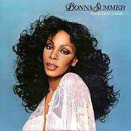

why music was so groovy back then
The music of the 70s is often regarded as cool due to its combination of various genres and styles. The decade saw the emergence of new musical movements such as funk, disco, and punk rock, which incorporated elements of existing genres such as rock, pop, and soul. This created a diverse and eclectic musical landscape that appealed to a wide range of listeners.Another reason why the music of the 70s was cool was the innovative use of technology and production techniques. Advances in recording technology allowed for the creation of more complex and layered soundscapes, while the use of new instruments such as synthesizers and drum machines opened up new sonic possibilities. This resulted in a more polished and sophisticated sound that appealed to a generation that was increasingly interested in music as a form of art. Finally, the music of the 70s was cool because of the way it reflected the cultural and social changes that were taking place during the decade. The music of the era was often political and socially conscious, with artists using their platform to address issues such as civil rights, gender equality, and the environment. This made music not just a form of entertainment, but also a means of communicating important ideas and inspiring change. The coolness of the music of the 70s therefore lies not just in its sound, but also in its ability to reflect and shape the culture of its time.
